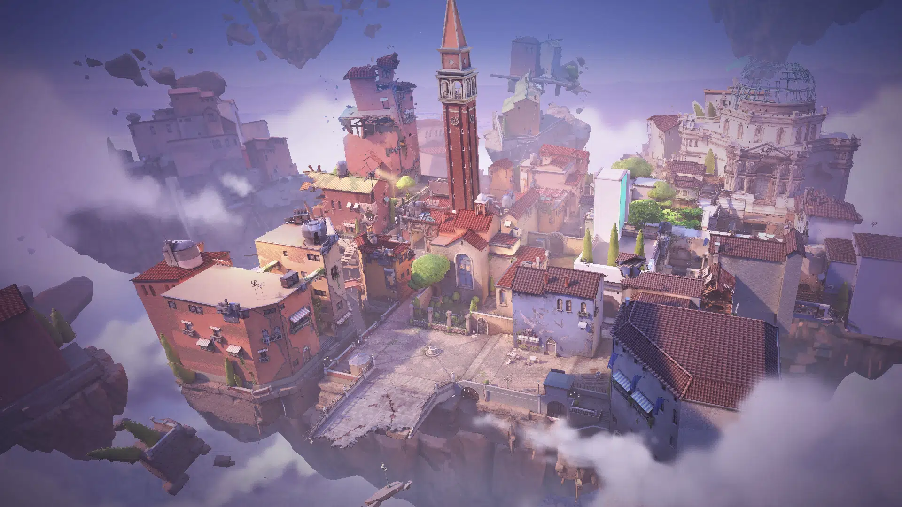
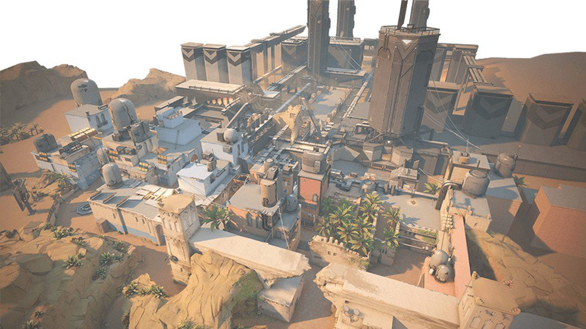
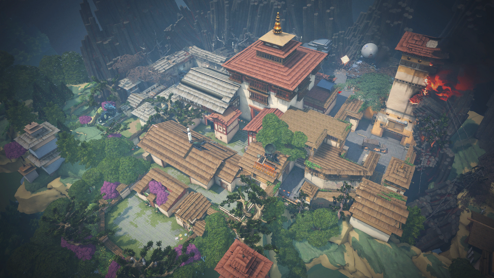
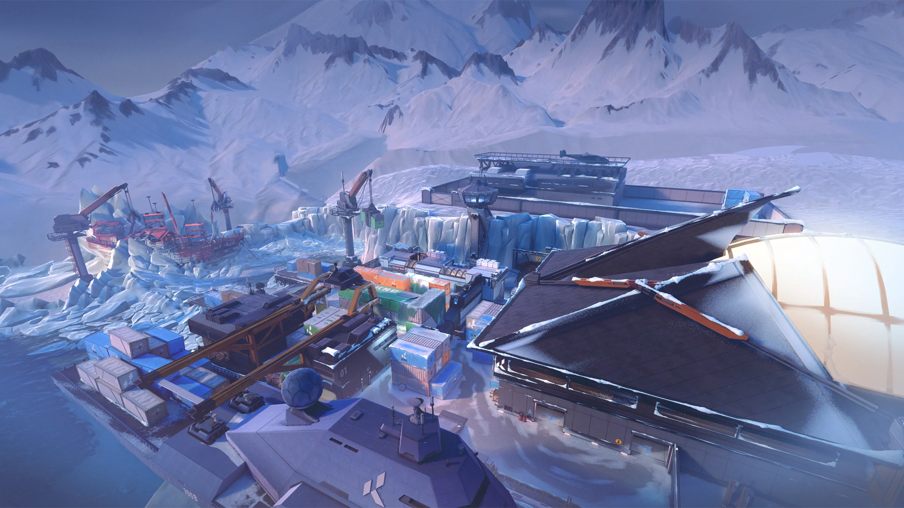
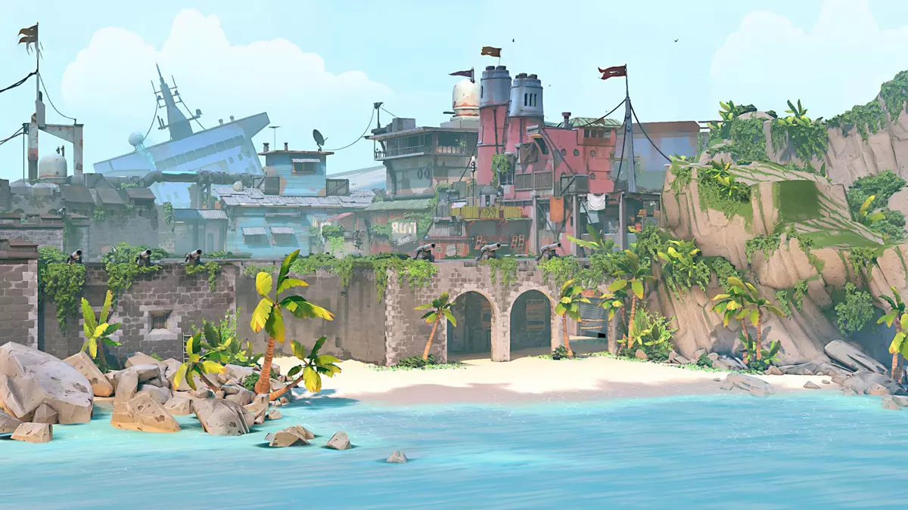

You goona see many cool maps you have never seen in any other games.
Ascent

Picture of Ascent
Ascent is one of the most popular maps in Valorant and has the highest play rate among all maps in professional play.
It currently has a play rate of 23.12% over the past 6 months across all regions.
According to the stats, it's a defender-sided map, with defenders winning 52.74% of the time in pro play.
Bind

Picture of Bind
Bind is one of VALORANT's seven playable maps located in arid environment of Morocco.
It is one of the 4 maps released with the initial release of VALORANT.
The map was also playable in the Beta Test.
Bind features two one-way teleporters that allow you to go from one site to the other.
Haven

Picture of Haven
Haven is a map in Valorant that is located in Thimphu, Bhutan.
It's one of the beta launch maps, alongside Bind and Split, making it one of the oldest maps in the game.
It's a beautiful-looking map and is one of the most popular maps in the game.
Much like other Valorant maps, Haven has a unique gimmick to it.
Pearl
Picture of Pearl
Pearl is a two-site three-lane map.
Following on from the release of more strategically complex maps like Icebox, Breeze, and Fracture, Pearl is designed as a more traditional map.
As a result, Pearl is the first map to be released that does not contain any dynamic elements or mechanical hooks for gameplay.
Icebox

Picture of Icebox
Icebox is a unique map in Valorant due to its narrow corridors, abundance of verticality, and emphasis on a single teamwide execute.
This map can easily trip up new players who are more used to a free-flowing game on maps like Haven, Bind, or Ascent.
Breeze

Picture of Breeze
Two bomb spots, a middle area, and a lot of connecting areas in between.
The defenders have a clear-cut path two both spots.
Via Side Arches and A Bridge, they can access the sites long before any attacker arrives.
The middle features wide open spaces and a lot of angles for Operator players.